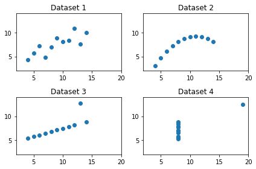
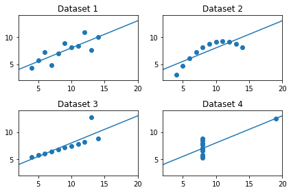

記述統計とグラフ
Contents
記述統計とグラフ¶
If you come here without expecting Japanese, please click Google translated version in English or the language of your choice.
import numpy as np
import pandas as pd
import matplotlib.pyplot as plt
from statsmodels.formula.api import ols
説明¶
Anscombeのデータセット
4つのデータセット
それぞれ変数は
xとyの2つ
全てのデータセットで以下が殆ど同じ
xとyの平均（mean）xとyの標準偏差（standard deviation）xとyの相関係数（correlation coefficient）回帰線（regression line）
決定係数（coefficient of determination, \(R^2\)）
図示（散布図）すると大きく異なる
＜本トピックの目的＞
データセットの質的な違いは記述統計だけでは確認できない。図示することが重要ということを示す例を紹介する。
記述統計 vs 図¶
ここではmatplotlibに基づいたseabornパッケージを使う。このパッケージを使うことにより，matplotlibよりも簡単に，更により綺麗にできるようになる。
Anscombeのデータセット
x1 = [10.0, 8.0, 13.0, 9.0, 11.0, 14.0, 6.0, 4.0, 12.0, 7.0, 5.0]
y1 = [8.04, 6.95, 7.58, 8.81, 8.33, 9.96, 7.24, 4.26, 10.84, 4.82, 5.68]
x2 = [10.0, 8.0, 13.0, 9.0, 11.0, 14.0, 6.0, 4.0, 12.0, 7.0, 5.0]
y2 = [9.14, 8.14, 8.74, 8.77, 9.26, 8.10, 6.13, 3.10, 9.13, 7.26, 4.74]
x3 = [10.0, 8.0, 13.0, 9.0, 11.0, 14.0, 6.0, 4.0, 12.0, 7.0, 5.0]
y3 = [7.46, 6.77, 12.74, 7.11, 7.81, 8.84, 6.08, 5.39, 8.15, 6.42, 5.73]
x4 = [8.0, 8.0, 8.0, 8.0, 8.0, 8.0, 8.0, 19.0, 8.0, 8.0, 8.0]
y4 = [6.58, 5.76, 7.71, 8.84, 8.47, 7.04, 5.25, 12.50, 5.56, 7.91, 6.89]
df1 = pd.DataFrame({'x':x1, 'y':y1}) # Dataset 1
df2 = pd.DataFrame({'x':x2, 'y':y2}) # Dataset 2
df3 = pd.DataFrame({'x':x3, 'y':y3}) # Dataset 3
df4 = pd.DataFrame({'x':x4, 'y':y4}) # Dataset 4
散布図
ax1 = plt.subplot(221) # ax1に図の座標の情報を挿入
plt.scatter('x', 'y', data=df1)
plt.xlim(2,20) # 横軸の表示範囲
plt.ylim(2,14) # 縦軸の表示範囲
plt.title('Dataset 1')
plt.subplot(222, sharex= ax1, sharey=ax1) # ax1の座標と同じに設定
plt.scatter('x', 'y', data=df2)
plt.title('Dataset 2')
plt.subplot(223, sharex= ax1, sharey=ax1) # ax1の座標と同じに設定
plt.scatter('x', 'y', data=df3)
plt.title('Dataset 3')
plt.subplot(224, sharex= ax1, sharey=ax1) # ax1の座標と同じに設定
plt.scatter('x', 'y', data=df4)
plt.title('Dataset 4')
plt.tight_layout() # レイアウトを見やすく調整
pass

平均
df_list = [df1, df2, df3, df4]
for df in df_list:
print('x:',df['x'].mean(), ' ', 'y:',df['y'].mean())
x: 9.0 y: 7.500909090909093
x: 9.0 y: 7.50090909090909
x: 9.0 y: 7.5
x: 9.0 y: 7.500909090909091
標準偏差
for df in df_list:
print('x:',df['x'].std(), ' ', 'y:',df['y'].std())
x: 3.3166247903554 y: 2.031568135925815
x: 3.3166247903554 y: 2.0316567355016177
x: 3.3166247903554 y: 2.030423601123667
x: 3.3166247903554 y: 2.0305785113876023
相関係数
for df in df_list:
print(df.corr().iloc[0,1])
0.8164205163448399
0.8162365060002427
0.8162867394895984
0.8165214368885028
回帰直線の係数の推定値
b0hat = [] # 切片の推定値を入れる空のリスト
b1hat = [] # スロープの推定値を入れる空のリスト
for df in df_list:
mod = ols('y ~ x', data=df).fit() # OLSの推定
b0hat.append(mod.params[0]) # 空のリストに推定値を追加
b1hat.append(mod.params[1]) # 空のリストに推定値を追加
print('b0:',mod.params[0], ' ', 'b1:',mod.params[1])
b0: 3.0000909090909094 b1: 0.5000909090909091
b0: 3.0009090909090914 b1: 0.5
b0: 3.0024545454545466 b1: 0.4997272727272727
b0: 3.0017272727272695 b1: 0.4999090909090913
回帰直線の図示
xx = np.linspace(2,20,100) # 回帰直線を描くための横軸の値
ax1 = plt.subplot(221)
plt.plot(xx,b0hat[0]+b1hat[0]*xx) # 回帰直線
plt.scatter('x', 'y', data=df1)
plt.xlim(2,20)
plt.ylim(2,14)
plt.title('Dataset 1')
plt.subplot(222, sharex= ax1, sharey=ax1)
plt.plot(xx,b0hat[1]+b1hat[1]*xx) # 回帰直線
plt.scatter('x', 'y', data=df2)
plt.title('Dataset 2')
plt.subplot(223, sharex= ax1, sharey=ax1)
plt.plot(xx,b0hat[2]+b1hat[2]*xx) # 回帰直線
plt.scatter('x', 'y', data=df3)
plt.title('Dataset 3')
plt.subplot(224, sharex= ax1, sharey=ax1)
plt.plot(xx,b0hat[3]+b1hat[3]*xx) # 回帰直線
plt.scatter('x', 'y', data=df4)
plt.title('Dataset 4')
plt.tight_layout()
pass

決定係数
for df in df_list:
mod = ols('y ~ x', data=df).fit()
print('R^2:',mod.rsquared)
R^2: 0.6665424595087751
R^2: 0.6662420337274843
R^2: 0.666324041066559
R^2: 0.6667072568984653